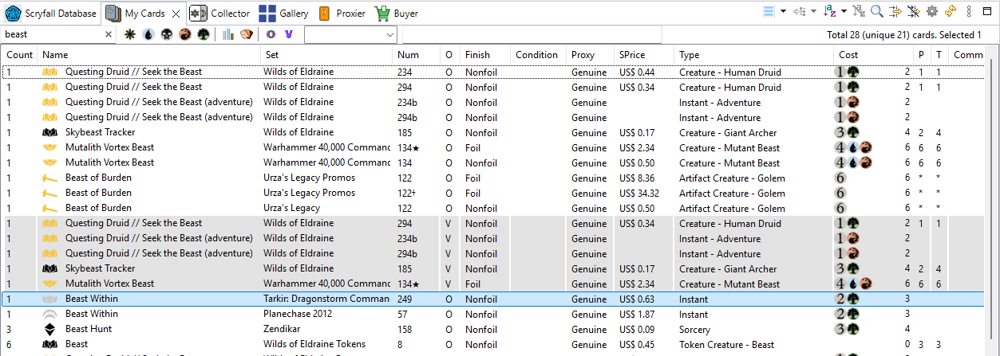

The My Cards view lists every card in all your decks and collections, in one list. Use it to answer questions like "do I have this card, and where?" or "how many red rares do I own?".

Besides the name, type and set filters, My Cards has four buttons:
For example, Own + Collections is your actual collection; Virtual + Decks is what your decks list.
Everything else works as in the other card lists: sorting, grouping, columns, Move to, Copy to, Edit Card... See Browsing the card database and Moving, copying and splitting.
See also: Collector · Searching and filtering